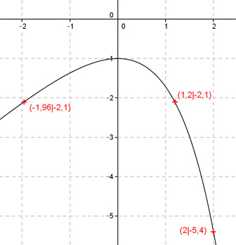
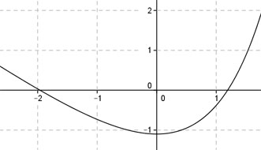

Aufgabe 114 Ergänzen Sie die Wertetabelle für den Graphen: y = x - ex x -1,96 oder 1,2 2 y -2,1 -5,4 y = f(2) = 2 - e2 = -5,4  An welchen Stellen x die Funktion den Wert -2,1 annimmt, ist elementar nicht zu ermitteln. Abgelesen: Es sind 2 Stellen. Zur Berechnung wendet man ein Näherungs- verfahren an, hier die Regula falsi. fx = -2,1 eingesetzt: -2,1 = x - ex | + ex ex - 2,1 = x | -x ex - x - 2,1 = 0 Als Funktion: y = ex - x - 2,1 Die Nullstellen dieser Funktion (y = 0) entsprechen den gesuchten Werten für x.  Abgelesen: Nullstellen zwischen -2 und -1 und zwischen 1 und 2. Regula falsi: x0 = gesuchte Nullstelle x1 * |y(x2)| + x2 * |y(x1)| x0 = ------------------------------ |y(x1)| + |y(x2)| Nullstelle x0 zwischen -2 und -1 mit Excel ermittelt: A B C D E F G H I J -2 -1 0,7321 0,0354 -1,4642 -0,0354 -1,4995 0,7674 -1,9539 -0,0043 -2 -1,9539 0,0043 0,0354 -0,0087 -0,0691 -0,0778 0,0397 -1,9590 0,0000 -2 -1,9590 0,0000 0,0354 0,0000 -0,0693 -0,0693 0,0354 -1,9590 0,0000 -2 -1,9590 0,0000 0,0354 0,0000 -0,0693 -0,0693 0,0354 -1,9590 0,0000 -2 -1,9590 0,0000 0,0354 0,0000 -0,0693 -0,0693 0,0354 -1,9590 0,0000 Die gesuchte Nullstelle ergibt sich nach mehreren Näherungen mit ausreichender Genauigkeit zu x01 = -1,96 gerundet. Erläuterungen zur Tabelle siehe Aufgabe 101. Die Nullstelle zwischen 1 und 2 ergibt sich nach dem selben Verfahren zu x02 = 1,2 gerundet.